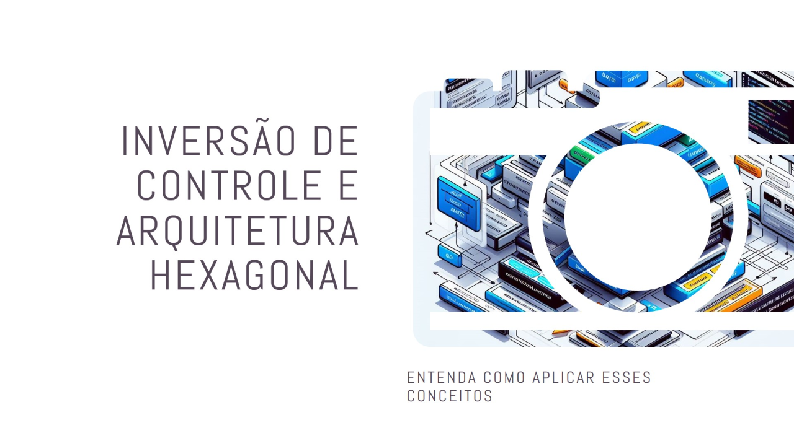

Inversão De Controle
{width="5.905555555555556in" height="3.3222222222222224in"}
O conceito da inversão de controle.
Inversão de Controle (IoC)
 {width="1.0416666666666667in" height="1.0416666666666667in"}
{width="1.0416666666666667in" height="1.0416666666666667in"}
Desenvolvedor Java Sênior na Develcode
7 de abril de 2024
A ideia de Inversão de Controle (IoC, do inglês Inversion of Control) é utilizada para aumentar a modularidade dos sistemas, criar extensibilidade e usufruir melhor da Programação Orientada a Objetos (OOP). O termo inicial foi utilizado por Michael Mattson, mas ficou popular em 2004 após ser citado por Martin Fowler e Robert C. Martin (Uncle Bob). A Inversão de Controle é implementada através da Injeção de Dependência, segundo a qual as dependências de um objeto não devem ser definidas diretamente dentro dele no momento de sua criação, mas devem ser inseridas (injetadas) dinamicamente, de acordo com alguma configuração mutável.
E a primeira ideia da Arquitetura Hexagonal foi proposta por Alistair Cockburn em meados dos anos 90. Esta arquitetura é também conhecida como \"ports and adapters\" e foi criada com o objetivo de separar as preocupações em um sistema de software. Ela se baseia na ideia de que um sistema pode ser dividido em três partes principais: o núcleo da aplicação, as interfaces do usuário e as interfaces externas.
A ideia central da Arquitetura Hexagonal é que o núcleo do sistema, que contém a lógica de negócio, deve ser independente das tecnologias externas, como bancos de dados, frameworks e interfaces de usuário. Para isso, a Arquitetura Hexagonal propõe a utilização de portas (ports) e adaptadores (adapters).
Essa abordagem é particularmente crucial para programas projetados para ter longa durabilidade, assegurando que as mudanças nos métodos de consumo não exijam alterações extensivas no núcleo do software.
Existe uma relação entre a Inversão de Controle (IoC) e a Arquitetura Hexagonal.
Inversão de Controle (IoC)
A Inversão de Controle (IoC) é um princípio fundamental no desenvolvimento de software. Ele propõe uma mudança significativa na maneira como organizamos e estruturamos nosso código. Vamos explorar os conceitos-chave:
1. Controle do Fluxo:
- Tradicionalmente, o fluxo de controle em um programa era determinado pelo próprio código. O desenvolvedor especificava a ordem das operações, como em uma receita de bolo.
- Com o avanço das interfaces gráficas e a necessidade de interações mais flexíveis, essa abordagem tornou-se limitada. Os usuários passaram a controlar o fluxo, clicando em botões, preenchendo campos e tomando decisões.
- A IoC inverte esse controle: agora, quem determina o fluxo não é o código, mas entidades externas, como usuários, outras aplicações ou frameworks.
2. Benefícios da IoC:
- Desacoplamento: A IoC reduz o acoplamento entre componentes, tornando o código mais flexível e fácil de manter.
- Reusabilidade: Ao delegar responsabilidades, podemos reutilizar componentes em diferentes contextos.
- Testabilidade: A IoC facilita a criação de testes unitários e mocks.
3. Implementação:
- Na prática, a IoC é alcançada por meio da dependência de abstrações (interfaces) em vez de implementações concretas.
- Em vez de criar objetos dentro de uma classe, recebemos esses objetos como parâmetros (por exemplo, por meio de construtores).
{width="5.905555555555556in" height="5.905555555555556in"}
Arquitetura Hexagonal aplicada com a IoC.
Arquitetura Hexagonal (Ports and Adapters)
A Arquitetura Hexagonal, também conhecida como Ports and Adapters, é um padrão arquitetural que visa isolar a lógica de negócios da aplicação do mundo externo. Vejamos os principais pontos:
1. Camadas e Responsabilidades:
- A Arquitetura Hexagonal organiza o código em camadas, cada uma com uma responsabilidade específica.
- As camadas incluem a lógica de negócios, interfaces de usuário, bancos de dados e outros sistemas externos.
2. Portas e Adaptadores:
- As Portas são interfaces que as camadas de baixo nível expõem. Elas definem como a aplicação se comunica com o mundo externo.
- Os Adaptadores são as implementações dessas interfaces. Eles conectam as Portas às tecnologias específicas (como bancos de dados, APIs, etc.).
3. Relação com a IoC:
- A Arquitetura Hexagonal e a IoC estão relacionadas porque ambas buscam o desacoplamento e a dependência de abstrações.
- Na Arquitetura Hexagonal, as Portas representam abstrações, e os Adaptadores são as implementações concretas.
- Essa abordagem permite que o código seja mais flexível e adaptável a diferentes contextos.
Em resumo, a IoC e a Arquitetura Hexagonal compartilham o objetivo de promover o desacoplamento e a dependência de abstrações, tornando o código mais modular e fácil de evoluir.